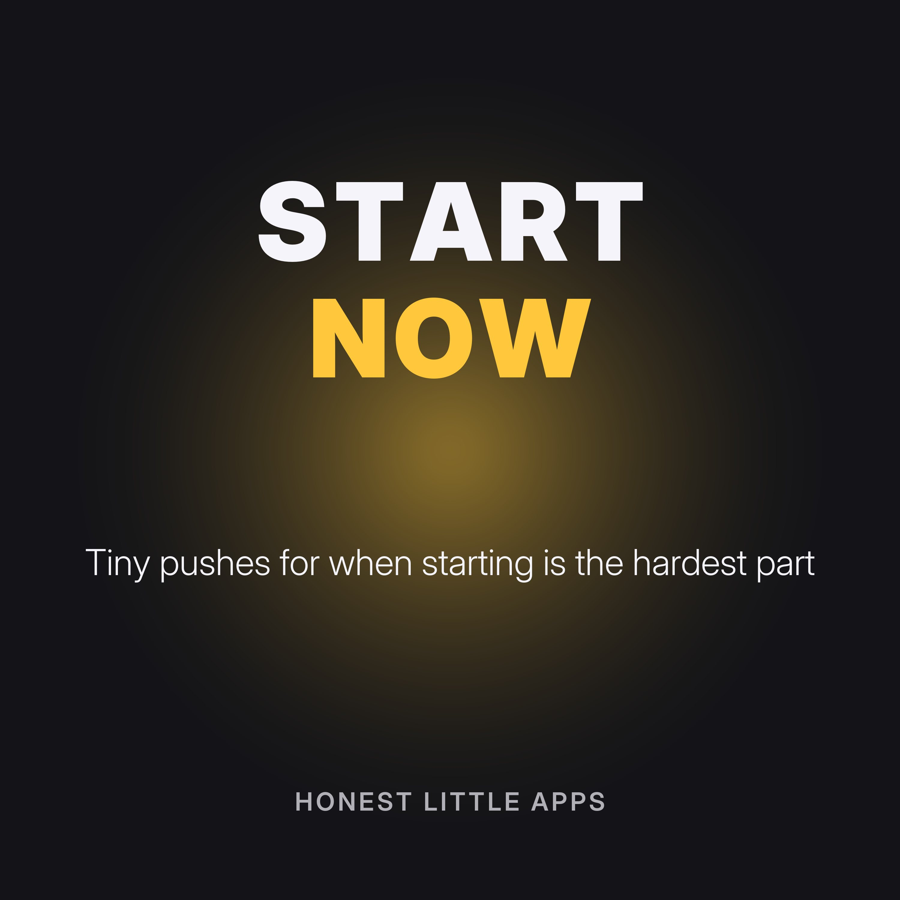

Start Now: Tiny Pushes for Getting Started
Very short episodes for the moment you can't make yourself begin. Each one picks one common way people get stuck and walks you to the smallest possible first step, with a short countdown. Made for anyone who finds starting hard, including many people with ADHD. Not medical advice.
Made by Honest Little Apps, the makers of Now: ADHD Task Starter, a free iPhone app that shows one task, one small first step and a big start button. No account. Narrated with a synthetic (text-to-speech) voice.
- When you don't know where to beginIf you don't know where to start, the task is too big.
- When it feels boringBoring tasks are hard to start because nothing pulls you in.
- When it feels too bigBig tasks feel like walls.
- When you're scared of doing it badlySometimes we don't start because we're afraid the result won't be good enough.
- When you're too tiredLow energy is real.
- After you've been distractedYou started, and then you drifted. That's normal.